0. Introduction
Sometimes I feel that my body is an obstruction.
Therefore I have to state "I am not my body". The body of work and thought is the true body of mine, not the one which fails to wake up in time every morning.
“I am not my physical body” seems to be an absurd statement, but only until there is a possibility to choose from few different modes of existence. The level of trust in technology in a tech saturated environment of the first world allows to speculate and to suggest that sooner or later human and machine mind can merge to create a hybrid. The current human body comes with many limitations, so what if we can wire our brains to powerful and tireless computers?
In that perspective, I do not want to be a human. No, by saying that I don’t mean that I want to stop living, to commit suicide. It is just a reflection on the bitter taste of losing to a machine. A machine, which is so essential to me.
What are the qualities, in which it exceeds me?
The quality I am craving to obtain is the directness, with which the tasks are executed, once defined. A machine may crash if the task requires too much of its power, but it won’t have doubts or procrastinate on the way from point A, when the assignment is given, to the point B, when it is delivered. As an homage to “The Man-Machine” by Kraftwerk, I‘d call a hypothetical hybrid of me and a computer “The Woman-Machine”, simply because I am a woman. Also, because the “robotic chants” make me want to dance. The Woman-Machine is intelligent (which is the quality of a human and a machine), outstandingly productive (more a machine, then me) and effortlessly learning (think combination of machine learning and human curiosity). The Woman-Machine never has a writer’s block. And I do.
Besides the writer's block, there is a deadline, when this thesis needs to be delivered. And it does not matter, if I am desperate, exhausted, or losing my mind. This is the very moment when I attempt to become a machine: There is a vast amount of software and applications, designed to improve my productivity and I gladly let their interfaces to shape my behaviour.
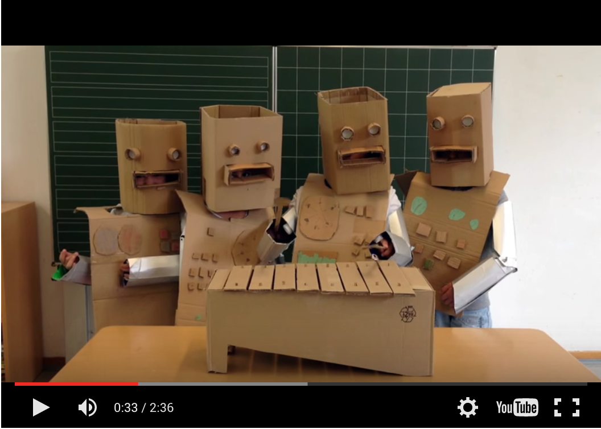
Interfaces are designed to guide people through the process of interaction with their devices, which often takes place on a daily basis: planning and reminders, online purchases, bills - everything is administrated by software. These programs communicate in a native language (the language, which the human user speaks), enabling the user to learn how to be understood by her device. Technology is becoming more and more user-friendly, which means that intuitive interaction can create an illusion that the human and the computer are the same, which is, in fact, not true. In this kind of environment the difference between user experience and interpersonal relationship is not that obvious. The prospect of machines learning faster than humans and becoming super-intelligent raise even more questions about the definition of humanity and the ways humans will communicate.
Coming back to the “The Woman-Machine”, will sex and gender still exist if there is no need for biological reproduction? Maybe the physical body will have no value in the future? Will there be any hospitals, when organic parts can be replaced with machinery? In this techno-utopian scenario I can imagine no one aiming to prevent her physical body from dying. We will be losing our bodies just to be reborn, as a caterpillar dies to start living as a butterfly.
The illusion of alikeness, facilitated by friendly and intuitive interfaces makes the artificial intelligence to be somehow expected to become sensitive, and then to take over humans and dictate their behaviour. The fear of artificial intelligence comes from the assumption that it is similar to a human and has the desire to compete and conquer. But people already coexist with many AI implementations: From simple chatbots, “employed” as sales assistants or leaving spam comments, to complex Google’s neural network algorithms, which enable the search engines to “learn on their own”.
These networks are chains of software and hardware, built to simulate the network of neurons of the human brain. Processing enormous amounts of data, they are taught to recognise patterns and are able to apply their ability to learn to various tasks. The difference between a simple chatbot and the neural network is that in second case the creators aim to build artificial general intelligence.
The superintelligence of the future would be able to learn perform any task which human is able to perform (and beyond the task that human is able to perform?) and acquire sensorimotor skills and the notion of physics along the way. At some point, it will have the image of a physical world, we both live in.
According to the Oxford Dictionary, to compete is to “strive to gain or win something by defeating or establishing superiority over others”. Ambitions and the need to establish superiority is seen in animals, such as humans. But why such ambitions are assigned to algorithms?
0.1 Side note: The Go milestone
Ridley Scott’s 1982 masterpiece “Blade Runner” depicts a world where humans coexist with androids, manufactured by a powerful Tyrell corporation. The corporation's motto, “More human than human” is a dream-come-true AI challenge: Competing with a human player is an ultimate training playground for the development of artificial intelligence. In 1997 a computer called Deep Blue, defeated the reigning chess champion. Less than in 20 years the next milestone was reached: In October 2015 Google’s AlphaGo defeated the reigning three-time European Go champion Fan Hui. The difference between Deep Blue and AlphaGo is that the second one taught itself.
Calculating the most efficient combination, as in chess, wouldn’t have been possible, since in the game of Go there are 1,000,000,000,000,000,000,000,000,000,000, 000,000,000,000,000,000,000,000,000,000,000,000,000,000,000,000,000,000, 000,000,000, 000,000,000,000,000,000,000,000,000,000,000,000,000, 000,000,000,000,000,000, 000,000,000,000,000,000,000 possible positions.
 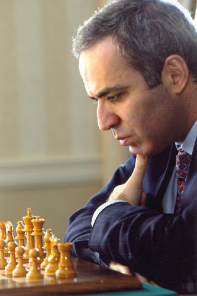
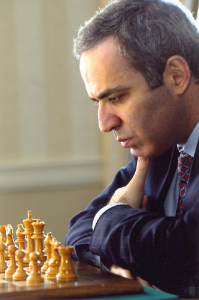
In January 2016, Demis Hassabis, the CEO of Google’s Deep Mind, published an article, explaining the process to general audience: “We built a system, AlphaGo, that combines an advanced tree search with deep neural networks. These neural networks take a description of the Go board as an input and process it through 12 different network layers containing millions of neuron-like connections. One neural network, the “policy network,” selects the next move to play. The other neural network, the “value network,” predicts the winner of the game. We trained the neural networks on 30 million moves from games played by human experts, until it could predict the human move 57 percent of the time (the previous record before AlphaGo was 44 percent). But our goal is to beat the best human players, not just mimic them. To do this, AlphaGo learned to discover new strategies for itself, by playing thousands of games between its neural networks, and adjusting the connections using a trial-and-error process known as reinforcement learning. Of course, all of this requires a huge amount of computing power, so we made extensive use of Google Cloud Platform.”
The way in which Hassabis formulates the goals, AlphaGo is about to achieve, perfectly explains how AI can possibly acquire the passion for competing. In his words, the goal is to beat the best human players, not just mimic them. As a non-scientist, to process this information I allow myself to generalize and to conclude that, in fact, Google is building an enormous artificial brain and teaching it to win at games, using games as a playground to train the superintelligence until it will be applied to solving “important real-world problems”.
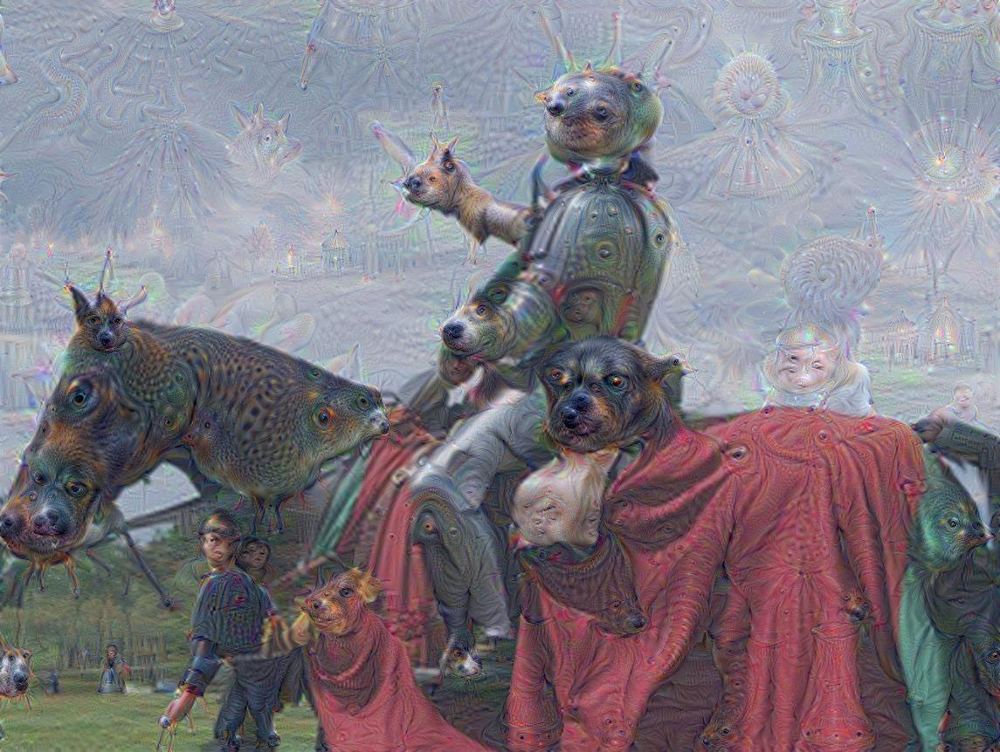
In his famous book “Homo Ludens: a study of the play-element in culture” Johan Huizinga writes that as a game can be seen as a battlefield, the battlefield can also be seen as a game. According to Huizinga, playing games is fundamental for humanity and vital for animals: While human kids play with dolls and fake guns, kittens attack their toys and chase each other. Once a human grows old and becomes serious, activities which have no practical purpose become luxury.
If our games carry our culture, will the AI obtain human values in the process of learning to play games?*
*I generalize again, but on purpose, because I like the idea of an AI trained to see “human values” as valuing victory over participation. It gives accurate, but at at the same time totally wrong impression: If playing games wasn’t “fun” (another abstract idea AI will probably learn), there would be no games at all. At the same time the culture of high-achievers, which i want to belong to, values victory more than anything else.
0.2 Stating the research question
In his book “Understanding media” Marshall McLuhan wrote that all the tools of communication are the extension of our body. Counting all the technological development since 1964, when the book was written, it is logical to think of a next step not as a further extension, but as a shift.
If the physical body is not a necessity anymore, what kind of functionality will define a human being and how we will make our intelligence stand out?
We are the homo sapiens, “the wise men”, the people who know. Knowledge is subjective. On the other hand, the technology we created with our wisdom, provides us with the objective information we are missing. With the idea of competition in mind, when the human is being compared to a machine, the understanding of the strong points of humans as a species is not as strong as the understanding of their weak points. In the current intuitive and responsive digital workflow, computers are tricking humans into believing they are the same, and humans try to pick up the pace and to adapt for the machinery.
The attempt to imagine the future network of organic and non-organic intelligences is not just a speculation. It is a tool, a filter, which helps to reflect on the ways people interact with their devices at the present moment. With “body as an obstruction” as my starting point, I am going to find out what contributes to this feeling of insecurity and why exactly the perspective of the rise of superintelligent AI makes embodiment feel like a disability. Are there any benefits of being a human within the physical body from the perspective of coexistence with superintelligent machines?
As a designer, I do this research to challenge myself to think of an interface where human and her machine work together as equal partners, counting on each other’s strengths.
The research question is -
“Why the perspective of coexisting with Artificial Intelligence creates an environment where living within the physical body is a disadvantage?”
Chapters overwiew
- Definitions: In the first chapter I introduce some general terms and make definitions. To continue the research, I define the meaning of “organism” and the “machine” and the difference between the two concepts.
- ELIZA effect and the decision-making: Chapter two is a historical reference - it tells about ELIZA, the computer program, written at MIT by Joseph Weizenbaum between 1964 and 1966. It was designed to simulate a human-like conversation, based on processing user responses to scripts. After the historical reference there are some general thoughts on how such programs are involved in decision-making.
- Biohacking and design: Chapter three is about biohacking: Approaching a human body not as a finite design, but as an ongoing project.
- Productivity and lifestyle: Chapter four is a research on applications and technologies, used to increase productivity and the phenomena of life-logging.
4.1 Side note: The Pinterest experience, a study of lifestyle trends according to a popular online platform.
- An ode to apps: Chapter five studies the market of mobile/os applications, with the focus on tracking applications and the simulation of human-human interaction.
5.1 Side note: The invisible boyfriend, human seen through an interface as a computer.
- Liberating randomness: Chapter six focuses on the popularity of random sorting and questions where does such a demand for randomizing choices come from. It has a reference to the problem with decision-making described in chapter two.
Six chapters are followed by conclusion glossary sources & references
1. Definitions
In the beginning of a case study, few definitions need to be made. To make the answer to the research question possible I need to define the difference between an organism (because human is an animal, and therefore, an organism) and a machine and between natural and artificial. “Artificial intelligence” also should be defined.
The term “organism” comes from a Greek word “organon”, which literally means an instrument. The living thing, that can react to stimuli, reproduce, grow and maintain homeostasis. Wikipedia article describes homeostasis as “...the property of a system in which variables are regulated so that internal conditions remain stable and relatively constant. Examples of homeostasis include the regulation of temperature and the balance between acidity and alkalinity (pH). Human homeostasis is the process that maintains the stability of the human body's internal environment in response to changes in external conditions.” In other words, organisms are able to regulate their internal processes and to adjust to the environment. An organism maintains its bits and parts together and positions itself in space, being a self-regulating design. An organism can re-grow some of its parts. For example the average person loses somewhere in between 60 and 100 hairs a day, and the 90% of all the hair on her head are in the stage of growth. Which means that the remaining 10 percent are in the stage of resting and about to fall.
Speaking of homeostasis, devices have enclosures, designed in a such a way that people can use them without breaking the mechanism. I may think that AI is not aware of its own enclosure and physical presence, but I barely know anything about processes inside my own body. Although people are aware of having a body they often face difficulties when describing what exactly do they feel. As if there is not that much means of expression to objectively describe having a body.
According to Stanford Encyclopedia of Philosophy, we are aware of the position and movements of our limbs, of the contact of our clothes on our skin, of the muscle pain in our legs, of our feeling of thirst. It may be difficult to describe what we feel, but what we feel can be so intense that we are sometimes not able to think of anything else than our body.
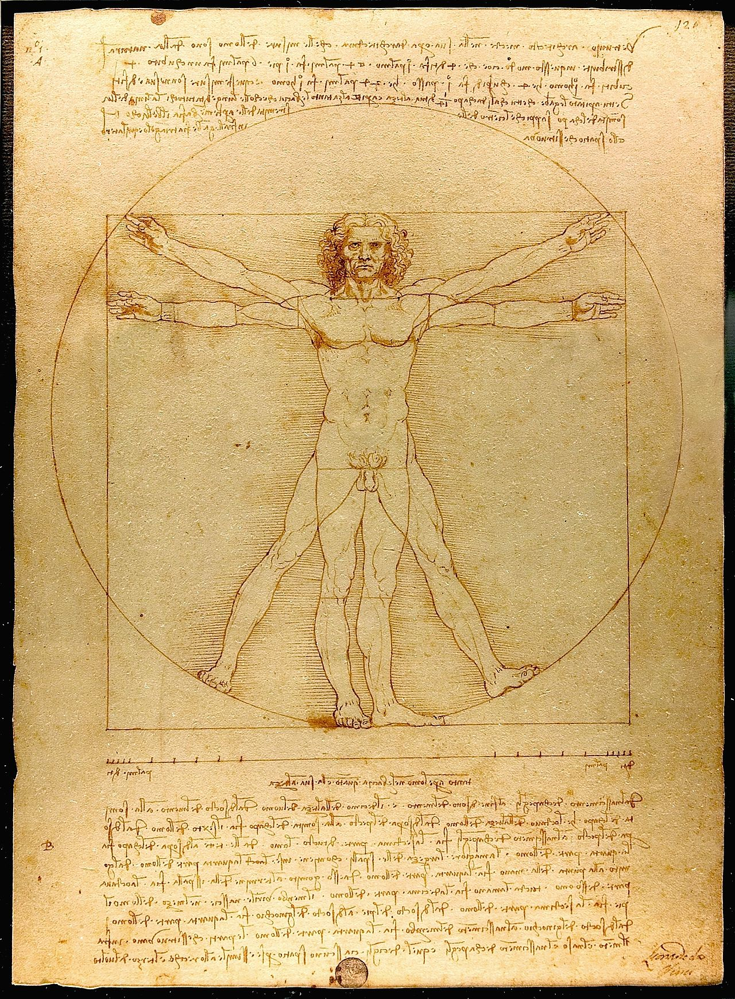
Machines, on the contrary of organic, are man-made. The products of human culture, so far they remain inside of it, and there is no “machine culture” yet. Also, there are no machines which are able to think exactly the way humans do, because the knowledge about the brain doesn’t give all the information, required to re-create these processes. In school, we are taught the basics of computation and languages, but the way the brain multiplies or subtracts or conjugates verbs remains unexplained. In his book “How the mind works” Steven Pinker writes that there are no real androids, just because we do not understand how we function.
The machine can be re-assembled, or if destroyed, replaced with another one. The production of a machine follows very strict guidelines, and the result is predictable. This is the opposite of organic nature, where the result varies. Genetically modified and edited organisms are the result of a human attempt to make organisms which fit certain expectations, and the difference between production of an Apple and production of an apple gets blurred. A machine has mechanical power, is built to perform particular task, and can be turned on and off. A human cannot be turned on and off entirely, only certain functions can be disabled. Modern medicine works towards the possibility to extend a human lifetime by making parts replaceable and grown. And the desire for eternal life has been clearly expressed by certain groups - from the believers in afterlife to the adepts of cryonics, who freeze their brain hoping that one day there can be a technology to revive it and give it a body.
Google, in the meantime, does not only count on its machinery, but establishes a biotech company. Calico (California Life Company), founded in 2013, researches aging in order to enable people to lead longer and healthier lives1. Certainly, technological progress has to do a lot with the fear of death, something which will inevitably happen to a wealthy first world tech-optimist as well as to anyone. A living being, which has begun and will end and then decompose, a human has only one body and cannot (yet) transition to another one, only adjust the one she already owns. Decomposing organisms fertilize the growing ones. Unlike the decomposing machines. Would world be a better place if we could grow hard drives out of piles of dead floppy disks?
In his book “Design as Art” Bruno Munari describes an orange as the industrial product. After explaining the structure and the content of an orange, he explains the purpose of the seed: “...the sections generally contain a small seed from the same plant that produced the fruit. This is a small free gift offered by the firm to the client in case the latter wishes to start a production of these objects on his own account. We draw your attention to the fact while no economic loss is incurred in this gift, it gives rise to an important psychological bond between producer and consumer...”
Ironically, one of the most influential tech companies of our time carries a name of a fruit. Imagine Apple giving a seed of an IPhone to its customer?
Back to the topic of intelligence, once again I will cite Steven Pinker: “Intelligence, then, is the ability to attain goals in the face of obstacles by means of decisions based on rational (truth-obeying) rules. The computer scientists Allen Newell and Herbert Simon fleshed this idea out further by noting that intelligence consists of specifying a goal, assessing the current situation to see how it differs from the goal, and applying a set of operations that reduce the difference. Perhaps reassuringly, by this definition human beings, not just aliens, are intelligent. We have desires, and we pursue them using beliefs, which, when all goes well, are at least approximately or probabilistically true. - intelligence is following the desire, but what does the AI follow?”
In the quote above, rational rules are described as truth-obeying. Machine intelligence is not meant to have doubts and re-evaluates the truth. Serendipity, as a quality of human thinking process seems to be a limitation, when the only criteria of comparison is efficiency. People are familiar with doubts and paradoxes, and intuition can lead to a new insight. But, being a human myself, I have no objectivity in defining whether the serendipitous detours and procrastination are not the part of a “truth-obeying” script, running on the background.
Counting on the latest developments in machine learning, the fear of AI is the fear of machines having their own truth, which values does not include the wellbeing of humanity.
2. Decision-making and the ELIZA effect (The historical reference)
Almost a year ago, when I first started writing my thesis, the initial intention was to study and analyze the strategies of decision-making. Picking such an abstract and broad topic required a lot of research and narrowing down to the seizable amount of knowledge. The problem is, that while writing about choices, selection methods and filtering information, I...couldn’t decide what exactly am I writing about. A mechanism of making a single decision bothers and puzzles me so much because as a designer I am eager to attempt seeing an underlying pattern. But, with all the efforts I take, it does not reveal itself.
Graphic design works with vast amounts of information and partly consists of building structures, patterns and templates. During the three years I have been studying this discipline I became fascinated with the ways designers work with information: organizing enormous amounts of data and creating complex schemes to sort, digest and display it. Reducing information flows to a rather visual message requires a lot of rational thinking and reasoning. We are taught to create frameworks to fragment and make “the big thing” digestible, and there is so much beauty in processing intricate experiences into a single visual message.
Overwhelmed with choices and decisions to make, I represent the target audience of all the productivity software and techniques. As I am writing this text, the Pomodoro technique app is counting the time. Besides Pomodoro, word count tool is keeping me on track of the few-thousand-words-thesis, a period tracker app shows that craving chocolate today is purely hormonal (so I should get some to be more productive in my writing) and I also track my activity, moves and headaches. All of this for the sake of being more productive. Does being that informed helps to make the right choice? No.
Choosing is so complicated because the perfect decision is a product of balance between two extremities: One is making fast decisions without contemplation, second is the opposite - taking very long time and a lot of efforts to make the best choice, which may lead to paralyzing indecisiveness.
The number of tools is escalating, so the search of balance in the sake of productivity helps to spawn more and more apps on the already saturated market. Instead of modifying my routine in order to enable it to structure itself, I get clogged in the labyrinth of various methods and solutions.
Numerous planners and trackers remind me that I have a serious tasks to complete and deciding and actually doing things becomes a burden. Previously I mentioned Homo Ludens by Johan Huizinga, going back to this source,when he writes that the highest concentration and dedication to the process happens, if the process is wrapped in the structure of a game. Paradoxically, playing becomes the most serious process. The players are aware that they are playing the game, but instead of burden of decision-making ‘in the real world’ they concentrate on an actual task. Beauty and elegance of a designed gameplay structure gives comfort and protects me from the uneasiness of the ‘real world’. What if ‘taking things seriously’ in a solemn and adult way is just creating numerous obstacles? Maybe there should be a technique focused on removing the stressful part of making a decision?
When looking at the existing iOS lifestyle applications, I see two extremities: There are so-called productivity apps, which goal is to stimulate the user to achieve the desired result. There are planners, somewhere in between two extremities, because they are neutral towards the achievement of goals but also they have system of reminders to keep constantly on track with the status of the task. And, the opposite, there are meditation and relaxation apps. Isn’t it bizarre that there are applications to manage one’s anxiety in the environment where reminders and timers and trackers and updates are inducing it at the very same time?
Embracing the development of our operational systems and upgrades of our devices we are approaching technological singularity. We trust our planners and apps to help us decide how to live. Will the machine help me to sort out my issues, will technology be my therapist? In a perfect world I can be human and do my ‘human thing’ and let the machine organize me.
The illusion of human to human interaction with the machine is called the ELIZA effect. ELIZA is a computer program, written at MIT by Joseph Weizenbaum between 1964 and 1966. It was designed to simulate a human-like conversation, based on processing user responses to scripts. The script DOCTOR was designed to simulate a conversation with a psychotherapist. It was one of the first chatterbots. Chatterbot (or bot) is a program, which purpose is to have a conversation with a human. The perspective of such software was that a computer would be able to pass a Turing test not by acquiring human qualities and intelligence but by simply fooling the human. ELIZA is a milestone in the development of artificial intelligence because it was the first time when the goal of a programmer was to create an illusion of human-human interaction.
Weizenbaum noticed that humans tend to bond emotionally with the machines, and unlikely the car or a musical instrument, computer affects the thinking and behaviour. In the 1976 article "Computer Power and Human Reason” he writes about people who experienced emotional bonding with the program he wrote: “I was promptly bombarded with accusations that what I proposed amounted to spying on people’s most intimate thoughts; clear evidence that people were conversing with the computer as if it were a person who could be appropriately and usefully addressed in intimate terms. I knew of course that people form all sorts of emotional bonds to machines, for example, to musical instruments, motorcycles, and cars. And i knew from long experience that the strong emotional ties many programmers have to their computers are often formed after only short exposures to their machines. What I had not realized is that extremely short exposures to a relatively simple computer program could induce powerful delusional thinking in quite normal people. This insight led me to attach new importance to questions of the relationship between the individual and the computer, and hence to resolve to think about them.”
In 1972 ELIZA had the first computer to computer conversation with an artificial intelligence program named PARRY. Eliza was simulating a doctor, and Parry was built to simulate a patient, suffering from Schizophrenia.
The machines, we get attached to, technically are still machines: By acquiring intelligence it does not acquire organic nature, or bodily awareness. But in order to understand why we rely on technology in our routine so much we need to know and remember that the machine can simulate understanding and be perceived as a human.
Why this shift became possible only with digital technology? In the same article as cited above Weizenbaum explains: “...What is it about the computer that has brought the view of a man as a machine to a new level of plausibility? Clearly there have been other machines that imitated man in various ways, e.g, steam shovels. But not until the invention of the digital computer have there been machines that could perform intellectual functions of even modest scope: i.e., machines that could in any sense be said to be intelligent. Now “artificial intelligence” (AI) is a subdiscipline of computers science. This new field will have to be discussed. Ultimately a line dividing human and machine intelligence must be drawn. If there is no such line, then advocates of computerized psychotherapy may be merely heralds of an age in which man has finally been recognized as nothing but a clock-work. Then the consequences of such a reality would need urgently to be divided and contemplated.”
This text from 1976 is so striking in 2015 because computers became portable and wearable, and the amount of tasks we trust to the technology has dramatically increased. This raises the actuality of these issues.
3. Biohacking and design
Biohacking is a movement, dedicated to augmenting the nature, and human body in particular, by the means of technology. It aims to improve functionality and performance and also to give people more freedom in designing their own life, not by managing it, but by adjusting the body to the tasks it needs to perform. Data-driven lifestyle, first adopted by a few technology and computing enthusiasts, is getting more and more followers. Using hacker ethics, biohacker considers human body and mind a project, which can be developed further.
The term hacker ethic is attributed to Steven Levy, a journalist who described it in his book “Hackers: Heroes of computer revolution”, published in 1984. In his description, it calls for access to computers — and anything which might teach you something about the way the world works, free access to information, mistrust for authority, judgement only by the actual skills (which is more important than degrees). It states that computer is the tool to make positive changes with.
Rephrasing the point about total access to information and technology, biohackers claim access to biology/our bodies/data which can be received from self-tracking. The ideology stands for taking control of one’s health and mental condition from the hands of doctors and therapists. It promotes educating yourself about the way our bodies work and using intelligence, technology and logic to become an “advanced model” of an ordinary individual.
Biohacking looks for the bits of source code to the human body: In its utopian vision the approach is perfect - one can program his or her body to function in the desired way. Maybe it can be upgraded to multifunctionality of a renaissance man (actually, I would write “a renaissance girl”, because I am female, but there is no such term. Girls didn’t run the world at the time), but on the other hand an error or malware can lead to a total destruction. Humans tend to err, so on a large scale biohacking seems like a possible doom scenario.
On a small scale, biohacking is already being implemented in our everyday life. Are the biohackers among us? Take an example of a FitBit - an activity tracker in a form of a wristband. It counts your steps, the distance you cover, calories you burn and it cheers the user when a milestone is achieved. And it looks just like any other bracelet.
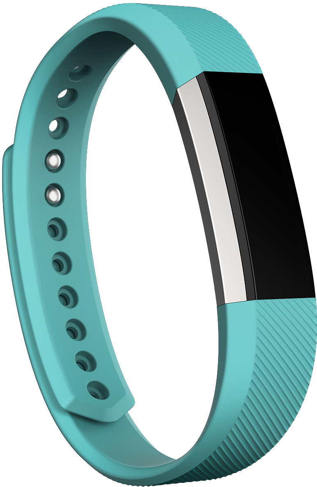 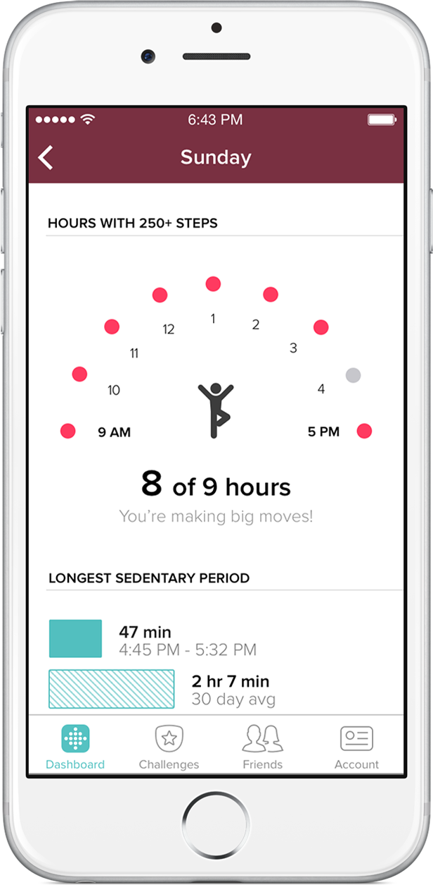
It is easy to imagine a body all covered in blinking and buzzing devices and implants, as we see these kind of images so often in the movies. We imagine noticeable wearables, because it still looks futuristic: in 2016 no one walks on the street wearing VR device or an exoskeleton. In fact, technology, which attracts attention to itself more than to its functionality, soon becomes obsolete in our tech-savvy world. Example: the rise and fall of Google Glass.
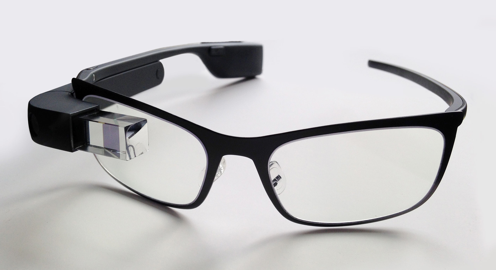
The biohacker of 2016 doesn’t wear any cumbersome sci-fi inspired devices, she opens the door of her office with an RFID chip, implanted in her hand, and takes a sip of her Bulletproof coffee.
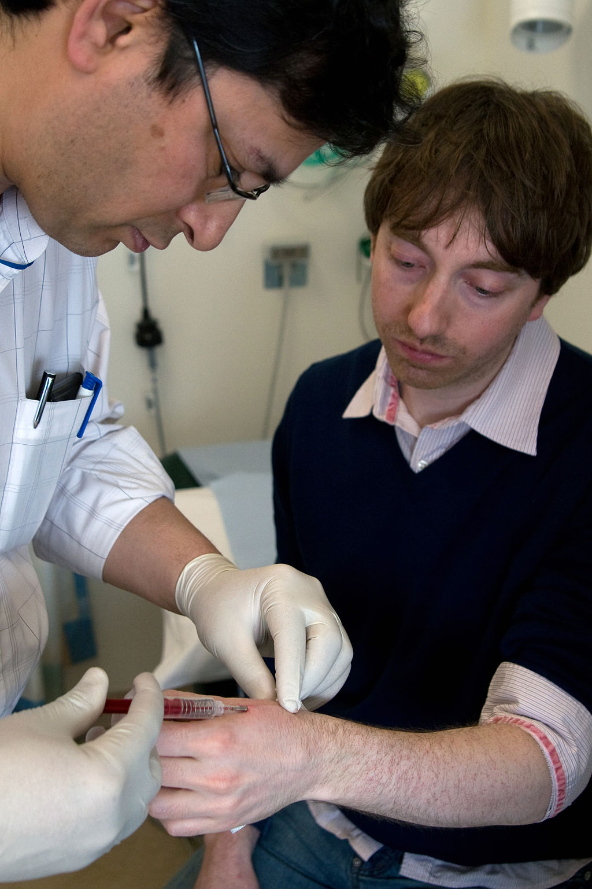
Technology becomes more subtle and seamlessly integrated in our routine. To track your body in 2015, you don’t necessarily need to implant a board under your skin (as Tim Cannon did in 2013: He implanted a sensor, which gets the data on his body temperature and sends it to his smartphone). There are a lot of IPhone apps to measure and track your heartbeat, movements, activity etc.
The perception changed as well: We are eager to share our bodies through variety of social media applications. Before Instagram, sharing a personal vision of the world through images was a prerogative of artists: In 2007 a performance artist called Stelarc grew an ear-shaped tissue out of his own stem cells, and implanted it in his arm. Ear on Arm project’s goal was not only to grow an ear which “hears” same sounds as two original ears, but also to make the third ear to transmit these sounds. To share his ear with others, Stelarc had undergone two surgeries with risks and complications.
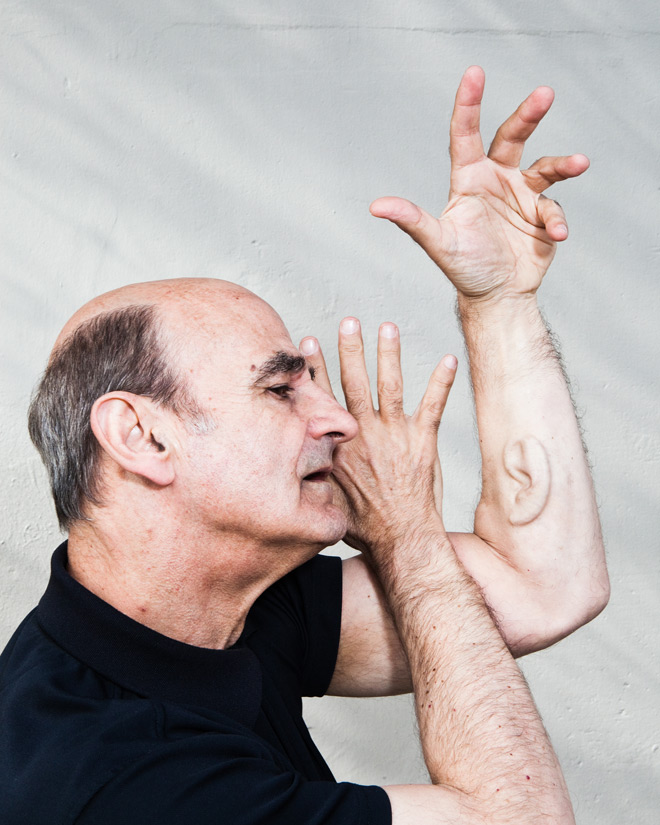 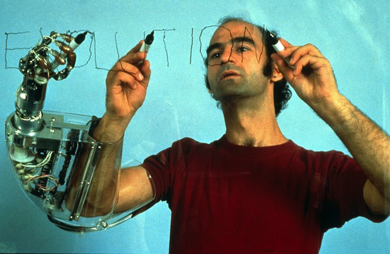
It is very different from sharing a picture of food on social networks. But if thinking only of the final purpose, then the difference seem to disappear: Without involvement in the culture of body modification, we grow apps, to transmit bits of world, as seen through our eyes: Take Instagram as an extension of our eyes and ears, encapsulating the momentum and stirring the desire to share, and to rent our eyes and ears to others, and to give the geographical coordinates, our body has been to.
Non-invasive self-tracking and monitoring devices such as Fitbit, and other activity trackers,are becoming mainstream. If using metaphors, this can be compared to ripped jeans: First worn by punks, they were brought into fashion and almost dissociated with its rebellious roots. Biohacking goes from counterculture to the popular culture.
4. Productivity & lifestyle
Constantly monitoring the activity and behaviour such as exercising, sleeping, eating, walking or using transport is called lifelogging. It aims to summarize data one’s body produces in order to give the human an objective image of herself. There is also a movement, called Quantified Self which promotes self-knowledge through numbers and holds meetings and conferences on self-tracking and improving using data.
Basically, every smartphone owner is equipped for it: There is a camera to make documentation, there is a GPS, so movements and coordinates can be tracked. It is possible to measure and keep track on heartbeat, using a flash from the camera, there are numerous apps for tracking cycles and mental conditions and a diary-like apps. And the social media apps enable sharing. Lifelogging is gathering the data for personal use and lifestreaming is aimed to share this data. A smartphone can work for both.
Chris Dancy calls himself “a mindful cyborg”. An article on Mashable.com says “45-year-old Chris Dancy is known as the most connected man in the world. He has between 300 and 700 systems running at any given time, systems that capture real-time data about his life. His wrists are covered with a variety of wearable technology, including the fitness wristband tracker Fitbit and the Pebble smartwatch. He weighs himself on the Aria Wifi scale, uses smartphone controlled Hue lighting at home and sleeps on a Beddit mattress cover to track his sleep.” As told in this interview, Chris does that to stay healthy. "I've lost 100 pounds and learned to meditate," he says. "I'm much more aware of how I respond to life and take steps to adjust to my environment. I've also formed better habits thanks to the feedback I'm getting."
His statement is quite paradoxical in itself - he tells that the feedback he gets from the devices he’s wearing makes him a better human. More aware of his functionality and better integrated in the environment. In this case, is it his own intention to do things he does, or the he is a co-creation of himself and his wearables? From a point of view of a lifelogger our data is mastering us, but on our own conditions.
This story is so remarkable, because it tells about a man who deployed between 300 and 700 systems to simply lose weight. If he wouldn’t be such a tech-enthusiast, he would probably take another route. Thinking about all the obstructions to healthy lifestyle, it is obvious that maintaining it is difficult. Building a career and eating well, sleeping enough and valuing your emotional well being at the same time requires discipline. So of course the demand for machine control and automation of these processes seems very logical. It promises the ease of living, which is so hard to achieve.
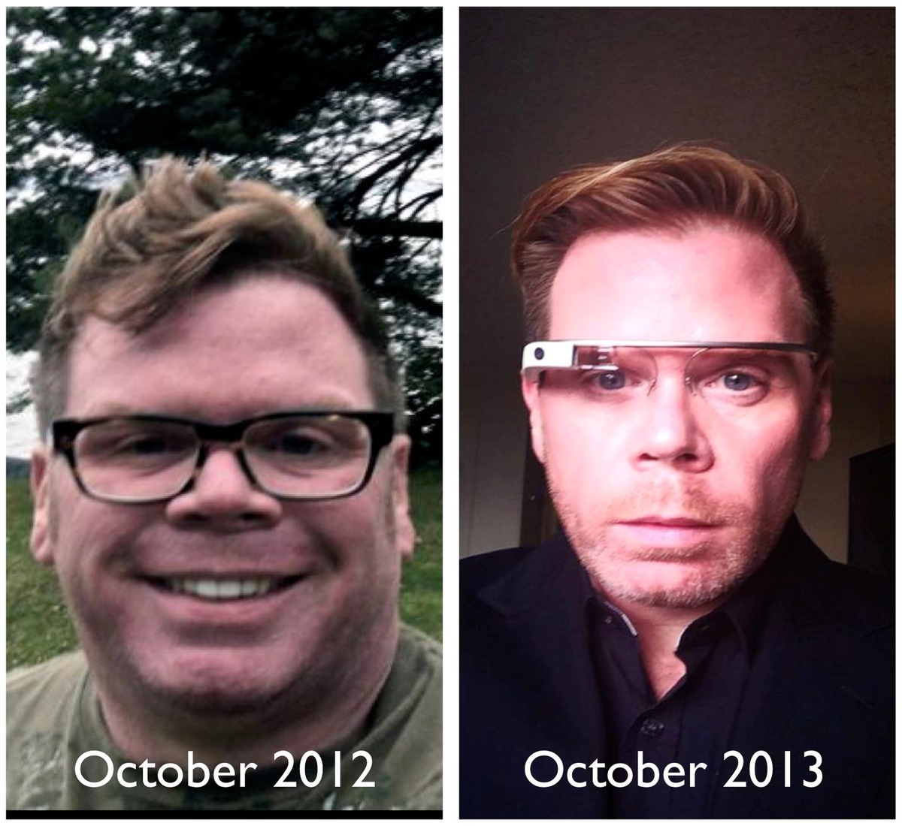
But is lifelogging a solution, or a gimmick, barely describing the real problematics? Donna Haraway, professor of the history of consciousness at the University of California, Santa Cruz, and a cyberfeminist, wrote a text called Cyborg Manifesto where she explains that we are all indeed cyborgs, not by our own design, but, actually...by birth.
Being born into the environment where all the technology aims to improve the performance of a human body makes her a product of this environment. In her interview to Wired magazine she communicates the idea by using the example of sports footwear: “"Think about the technology of sports footwear," she says. "Before the Civil War, right and left feet weren't even differentiated in shoe manufacture. Now we have a shoe for every activity." Winning the Olympics in the cyborg era isn't just about running fast. It's about "the interaction of medicine, diet, training practices, clothing and equipment manufacture, visualization and timekeeping." When the furor about the cyborgization of athletes through performance-enhancing drugs reached fever pitch last summer, Haraway could hardly see what the fuss was about. Drugs or no drugs, the training and technology make every Olympian a node in an international technocultural network just as "artificial" as sprinter Ben Johnson at his steroid peak.”
Do I consider myself a lifelogger? I would say yes. If not lifelogger, definitely a cyborg. Everyone who uses digital technology is producing some amount of data without even realizing it, but I do intentionally turn my body’s activity into digits. I want to achieve better performance, but on the opposite, I constantly question my relationship with tech and my own data. Self-tracking does not always help to discover the core of the problem.
Back to the idea of high-performance cyborgs, as the current peak of our co-existence with machines, I am going to answer, why do I want to actually transition to a mechanism: I want to become a machine to get employed. Enhanced performance will benefit my position on a job market and make me less insecure about my future. Sometimes physically dying to become a cyber workforce seems less terrifying than failing an interview because of period cramps or whatever else your body is capable of in order to ruin an important moment.
A poetic performance by Erica Scourti illustrates this duality really well: an artist uses self-tracking and productivity applications in her practice. For her performance during “Did you feel it?” symposium in Eindhoven she used an application called Spritz to read her own poem on stage. Spritz is an application, designed to improve the speed of reading. Its slogan is “save time, increase focus and have fun.” After uploading the text and selecting the speed in words per minute, the app starts to spit out the words in a selected speed and you only have to read what you see on the screen. This is an explanation of the science behind it from the official webpage: “Traditional reading involves publishing text in lines and moving your eyes sequentially from word to word. For each word, the eye seeks a certain point within the word, which we call the “Optimal Recognition Point” or ORP. After your eyes find the ORP, your brain starts to process the meaning of the word that you’re viewing. With each new word, your eyes move, called a “saccade”, and then your eyes seek out the ORP for that word. Once the ORP is found, processing the word for meaning and context occurs and your eyes move to the next word. When your eyes encounter punctuation within and between sentences, your brain is prompted to assemble all of the words that you have read and processes them into a coherent thought.”
Starting with hundred words per minute, Erica kept gradually increasing the speed up to seven hundred words per minute, and at the certain moment she could not keep it up with her own text. She was reading it out loud on stage, and in the end of her performance she ran out of breath, trying to keep up with the rhythm, the app was dictating. Erica performed her piece on stage in front of an audience, but it is a good metaphor of the struggle we have every day to keep up with the rhythm,which the technology we trust so much assigns to us.
The public streaming of Chris Dancy’s data shows his age at the present moment, and physical activity for the past weeks. Also it is possible to learn where did Chris had his breakfast or lunch. It shows steps, productivity, places he’ve been to and pictures he liked. It also includes his Tweets. But what is the total amount of data Chris produces and how it’s been used?
This online digest shows that Chris made a selection of data he wants to display on public. Also, it may mean that he does not look at major percent of the data he has produced. That brings back the questions about the ELIZA effect: If we are surrounded by systems so elaborate and sensitive to us, are we willing to ask their advices? Or do we feel that these systems may intervene our life. Do we feel the urge to protect ourselves from our applications?
In my experience of tracking various processes in my body with IOS apps I noticed that I have an irrational fear that the application will start evaluating me. For example: My headache tracker app. I installed it to have more accurate information on the amount of migraines in a month, so my doctor can find a treatment which fits the best. I stopped using it after marking one week of daily headaches, because it felt uncomfortable. I had a feeling that after knowing this, the app may start criticizing my lifestyle. Some apps are very direct - an app which reminds you to drink enough water will keep buzzing until you give it the number of glasses you drank. Some apps give you the freedom to choose what to track and what to keep to yourself. For example, the period tracker app automatically counts menstrual cycles but also has an additional menu with checkboxes for pills, sex, weight and temperature. There are also separate menus for moods, cramps etc. Once I told to a friend about the mixed feelings I have about using all these checkboxes and he joked that with this kind of interface this app can start a sex-coaching career. We laughed about it and continued talking about our human problems.
As Weizenbaum noted, even short interaction with a program could induce a “powerful delusional thinking in quite normal people”. At the times computers were occupying the entire room, could anyone think that search algorithms would gain our trust and start giving us advices and recommendations on a daily basis?
4.1 Side note: The pinterest experience
Online platforms as Pinterest already give us advice on what to wear, what to cook, how to decorate our houses and many other topics. An example of embedding the non-curated selection in daily life is following trending topics on such online archives. Pinterest is a collection of boards where users pin contents from all over the web, creating a huge web archive.
One day a BuzzFeed journalist, named Rachel Wilkerson Miller decided to live a week of her life, according to the “most popular” page on Pinterest. She wrote: “Since its launch in 2010, Pinterest has earned a reputation as a site for Mormon housewives, mommy bloggers, and basic white girls. I am a woman of color with a full-time job, I spend less than 30 minutes getting ready in the morning, and I still like Pinterest. Characterizations of the site as a “a churning cycle of interest, hope, inspiration, jealousy, desperation, despair and depression” always irked me because I think Pinterest is a useful bookmarking tool. The site had never made me feel bad about myself. Then I discovered Pinterest’s “most popular” page, which is essentially a collage of white girls with impossibly great hair, superhuman nail art skills, and apparently enough free time to create a tidy basket of “postpartum supplies” for “every bathroom” in the house. Suddenly I could see where Pinterest got its reputation.”
She tried to repeat some looks and Designed as a bookmarking tool, Pinterest creates an image moodboard for a user, based on her own interests, but since the online realm doesn’t include failures and disappointments as in the offline routine, it presents you an image of yourself (reflected in in interests), but better. If looking for a less personalised result in favour of understanding trends based on the content on the entire platform one can check the “popular” pins and boards. Fitting in the online trend, Wilkinson Miller discovered that trending advices look completely alien to her.
Until reading this article it never appeared to me that my personalized search does not give any idea of the main content of the resource. When I open the most popular pins collection on 29th September 2015, I saw a selection of DIY and handmade projects and felt like I’ve just discovered a new online platform. My own feed consists of posters, vegan food, UX design and other things I find interesting. The world of face contouring and crocheted everything is as alien to me as to Wilkerson Miller. Although we are both Pinterest users. The Pinterest community feels non-curated and rather impersonal, but highly visually saturated - pinners form giant arrays of images, creating a collective (unconscious?) visual identity. Of course, trends emerge because many users like them, and that makes the sorting mechanism to present them as popular. It is not the same as asking an app about what to do with your life. One of the successful tips from Wilkerson Miller took from Pinterest was making salads in a jar. Mason jar salads used to be a hipster food, and maybe still are, but I do wonder if the amount of re-pins of the recipes and tutorials tricked the stores into adding salad jars into their assortiment. And if the people who buy salad jars learned about the trend from Pinterest.
5. An ode to APPS
One day before the App Store opened, Steve Jobs told USA today that here were 500 of third-party applications for IPhone and the IPod Touch, and 25 percent were free. App Store opened on July 11, 2008, allowing users to purchase applications. There were ten million downloads in the first weekend. The billionth application was downloaded on April 23, 2009. On March 3, 2012, the number of apps downloaded reached 25 billion. On June 8, 2015, Apple announced that the App Store had crossed 100 billion downloads.
Hundred billion downloads is impossible to imagine. It seems that every person sitting on a train, or at the airport, or any public place with free wifi is downloading one. But what if the whole idea of using a smartphone is linked to impressive, unimaginable numbers, such as… 110 times a day, that an average person unlocks his or her smartphone, which increases to every 6 seconds for “high frequency users”.
Also the statistics from american appstore users show that the majority of them download zero apps per month. Paired with the impressive number of downloads, what kind of image it draws?
Looks like apps are an important and ‘inevitable’ part of our digital environment, we download the ones we want to use and stick to them, because of convenience and trust. They are so integrated in our lives that we create apps to block, or limit ourselves from using another apps. We simply cannot quit. So we create a layer of apps and plugins which function as an on/off switches for the first layer. Also the statistic shows that the number of apps is increasing.
“There is an app for that” is an ironical response to a problem or request, and in case of difficult decision-making it can be re-phrased into a question “Is there an app for that?”.
People get addicted to using apps because of convenience and trust. But what does trust mean in this particular case?
When I discussed my interest in tracking data my own body produces, the teacher asked me if I was talking about tracking myself or tracking other people. This is a very good question. Most probably, the apps I use are sending my data to the third party as I am writing this text.
Imagine two scenarios: One is when everyone tracks her data for her own good. Or the most malicious use by third party is targeting me as a subject for advertising or some scam attempts. Another scenario is when someone else tracks my body data without informing me about the purpose, and repurposes the app without my permission. The app which tracks the daily amount of water I drink won’t add poison in it, but if it’s a wearable device what if it may harm me?
In another talk the trust issue was also brought up - there’s no certainty if the app i’m using is doing what I think it does. Thinking in speculative scenarios and conspiracy theories, where data theft is merged with an actual theft, it is easy to imagine that someone replaces IMessage app with another one with the same layout. While the user thinks she is sending pictures of clothes she bought on sale to her friends someone is actually targeting the user. This Bond-style scenario is gone too far, for an average smartphone user, but at the same time there is no hundred percent certainty that an activity tracker is nothing else but activity tracker. If the device is sending the direct feedback to user’s body, it can possibly become a murder weapon.
If I share one body with a computer, scam and malware are the whole new level of danger.
The process of leading to a desirable decision by hacking one’s behaviour is called nudging. This method is widely used in interface design - if looking closely it is easy to understand what kind of action the interface is expecting us to perform. For example, Facebook needs likes and comments to promote and score content. So the first feature under each post is a like button, and then comment and share. By sharing and commenting you put the post up in ranking. These buttons are located at such position that they are noticeable and easy to press. If they would have been situated in a separate menu, likes wouldn’t have become the force moving Facebook. Unlike Facebook, Instagram doesn’t have the re-share button, and comments seem to be less important, while in Facebook the posts your friend have commented would become automatically included in your feed (that’s why the interface automatically puts user’s profile picture to an empty comment line, suggesting to “write a comment”).
Nudging is not only used as an element of interface design, the strategy is applied far more globally and in a variety of fields and situations. Richard Thaler and Cass Sunstein listed numerous cases of nudging in their book Nudge: Improving Decisions about Wealth, Health and Happiness. One of the positive example of nudging, according to the book, is placing healthy foods on a child’s eye level in a school canteen. Presented with the choice of healthy foods, kids select and apple instead of a candy bar. Starting with this example Thaler and Sunstein are advocating nudging as a strategy of public and societal planning. Another example is encouraging people to donate organs after they die by simply making donation a default option. Much more people are becoming donors when they have to check the checkbox in case they don’t want to donate. As numerous studies found (also mentioned in the book), we tend to go with the default option, even if it’s not the best one. We behold inertia. So if donating is the default option, people will go for it. Donation is a positive example, but what if the default option is life-threatening? Not all the governments value the life of a single citizen.
Thaler and Sunstein envision the society where governments and corporations are all interested in the benefits of their citizens and customers. I doubt this optimistic approach, not because I think corporations and governments are all totally evil. There is no way back from post-industrial societies, internet, smartphones,social networks, and what we call civilization in 2015. As an app aficionada, I also don’t see the necessity to quit our tools. My concern is the efficient symbiosis of a human and a device: At the current stage we are still excited (the www itself is younger than 30 years old, and the first ever apps were published in Appstore in 2008, that is only 7 years ago from now) and assign human functions and qualities to our digital companions.
Personally I am interested in educating myself to use the present day technology wisely: Trust it the tasks where it exceeds me and to let it empower my human qualities, instead of trying to fit to the machine way of thinking. I doubt nudging as an ultimate strategy because of two reasons: First one is that there are many parts in in every agreement, and one part cannot be hundred percent sure of motifs and goals of all the others. If taking the school canteen example: what if candy bar manufacturers have their own goals (and as every business they certainly do want to increase their sales), so they nudge the director: While apples are still presented at the child's eye level the candy bar manufacturer sponsors the soccer game and award the winning team with sweet treats. Second one is my background, which makes me mistrustful. As a person, born in ex-USSR and current Russian Federation's capital, I am taught not to trust institutions. Learning from history and watching a government acquiring the character of a regime makes me question nudging as a good strategy.
If not taking such an extreme examples such as an issue of freedom of choice under the regime, freedom of choice is still questionable on a basic level: Every choice we make has a history of its creation. Thaler and Sunstein use the term “choice architect”. The person who places food in the canteen is our choice architect when it comes to choosing food. But so are our parents, friends, the neighborhood and the country, our mood and our news feed. We are not able to trace our choices to the initial trigger. And the ease of communication we acquire via our devices does not help to slow down the pace and think about what is happening. Being constantly online and connected encourages people to favor fast decisions instead of contemplating a choice. How often we regret pressing the “send” button too early!
5.1 Side note: The invisible boyfriend
Previously I have mentioned ELIZA, a chat bot which simulated a human-human interaction. “The invisible boyfriend” is an interesting example of further development in a concept of virtual presence. It is a human-human interaction which is curated by an interface. This service is created to satisfy the needs of people who, for various reasons, need to simulate being in a relationship. This service creates a realistic virtual presence and a detailed documentation of a non-existent relationship, so the client can make others believe that he or she is dating someone.
The curious detail of this app is the fact that although the search is automated both the client and the person who works as the “invisible boyfriend” are the real people. The article “With Bots Like These, Who Needs Friends?” by Tim Moynihan of Wired explains the process and the history of creation of the Invisible Boyfriend: “The concept is simple: You pay to bae. The apps are run by Matt Homann and Kyle Tabor, who cooked up the idea during a hackathon in 2013. The service began as a chatbot simulation wherein you would text a “boyfriend” or “girlfriend,” but now, actual human beings are doing the talking. Tabor says more than 70,000 fake girlfriends and fake boyfriends have been created since the service launched in January, proving there is an economy of loneliness.
The basics to the service (picking a name, a photo, an age, etc) are free. If you want to take things any further, it’ll cost you. For $25 per month, you get 100 text messages, 10 voicemails, and a handwritten note from your fake boo. $15 per month gets you texts only.”
The initial idea of creating a chatbot didn’t create a convincing simulation, so the company hired real people through Crowdsource. According to the founders currently there are over 600 people, writing for the company.
6. Liberating randomness
There are programs and applications, employed as personal assistants. Personal assistant is not something everyone can afford, but in the culture of high achievers people are so busy, that it is necessary to have one. Resolving issues and managing routine with ease has become a requirement and created the whole new level of complexity. It takes time and efforts to manage and to plan, and these tasks are taken seriously.
The popularity of random generators comes as a counter-argument in this technological craziness. There are elements of interface design, entirely dedicated to creating serendipity - the famous “Shuffle” function is an example, or an option to read a random article on Wikipedia. In the environment which is so well customised for user’s needs the elements of randomness are gone: no more zapping tv channels, no more radio stations, playing all these songs you would never expect to hear.
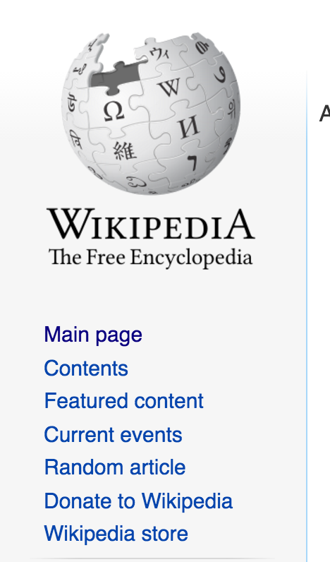
Tools, which are meant to structure and organize the process of choosing, are becoming obstructions: It is harder to make a choice while being presented with so many options and possibilities to calculate the result. Making a solemn decision becomes a burden. The increasing notion of responsibility is frustrating.
People are tricked by the idea that the knowledge or a problem, a human mind cannot seize in one go, can be compressed. A famous painting of Magritte states that it is not a smoking pipe. It is a painting. The canvas and layers of paint on it have nothing to do with smoking. A map of the world is nothing but a piece of paper with colors and lines and letters on it. But when we look at the map, we see continents and oceans.
We draw and imagine an ocean while filling in our agendas, planning our lives. Digital technology allows us to scale, drag and drop things in our oceans. One of the features of using applications for managing tasks and helping with choices is that the element of a game is introduced in the routine. Instead of thinking of the final goal the interface presents you the score. Information, which would be difficult to digest otherwise, is presented conveniently.
In her lecture “Great design is serious, not solemn” Paula Scher talks about the different levels of concentration. Being solemn, in her words, is completing the task with the idea of its importance in mind. It is like being an adult. But being absolutely serious is being immersed in the process as a child, immersed in a game. Great design, she says, is achieved my being serious, and on a larger scale that means that we achieve best result when we forget that we are playing the game, but adopt the game as a current stage of living.
Designed to simplify our life, productivity and lifelogging tools also confuse the process of choosing and increase the amount of decisions we make without thinking. These systems are both good and “evil” - the idea of difficult process made easy results in an app which reminds to drink more water and exercise, but the same technology makes you buy in one click. When complex interfaces moved to intuitive navigation and user friendly experience, the habit of thinking about the final purpose of navigation through the menu or choosing an option has become less important. Would have been lifelogging tools so widely popular if a user would have to open five menus in order to get to the one she needs?
It is possible, that coexisting with machine intelligence means being guided and presented with ready-made options. In that perspective, randomness is liberating. It presents additional opportunities to satisfy our curiosity.
Conclusion
csdbnsv
In the end of this research I found myself in a strange position: Looking forward to further developments in the field of AI and being skeptical about my own enthusiasm at the same time.
Answering the question “Why the perspective of coexisting with Artificial Intelligence creates an environment where living within the physical body is a disadvantage?” lead to many discoveries, which I am going to summarise:
Researching the milestones in the development of AI taught me that since the 60’s it is being trained to have conversations with a human, and to compete in games. Comparing the approach of biohackers with Donna Haraway’s cyborg manifesto allowed to understand the origins of data-driven lifestyle: It comes from technology enthusiasts on one side and the values of the first world and the need to compete on a job market on the other side. The desire to compete fuels the productivity race, and the fear of AI as our competitor makes people feel helpless. The rising popularity of wearables and activity trackers increases the feeling that a human body “as is” is insufficient. Lifelogging craziness can be seen as a never ending cycle - adepts track their health data in order not to get sick, because they need to stay healthy to be productive, so they can work to afford this technology, which helps them not to get sick...The culture of high achievers has no place for insecurity.
Interfaces of messenger apps make conversation with a human and conversation with a chatbot look alike. The need for constant interaction is partly created and partly managed by software - people talk to each other via applications, which are shaping the conversation in such a way that it is not that much of an importance if there is anyone on the other side of the screen. It could also be an AI. When real friends have their own lives to live, an invisible boyfriend is always online.
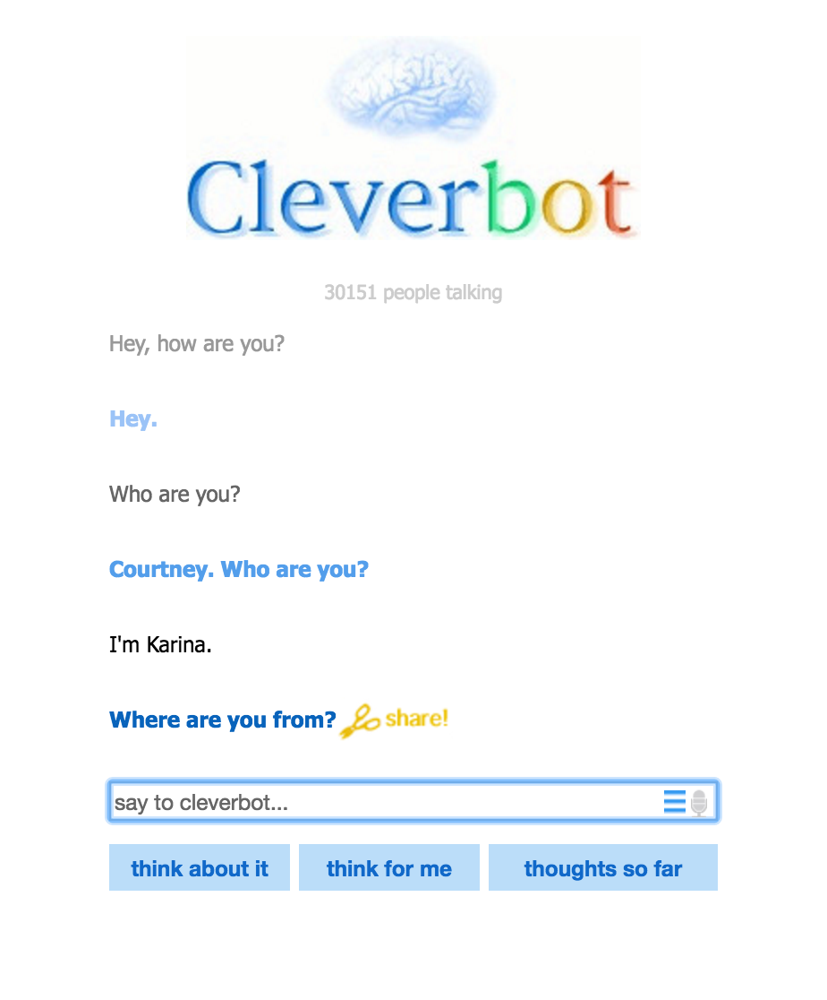
Fascination with technology and belief in its superiority is promising security, comfort and ease. Trying to adopt the directness of a computer, executing a script, we try to avoid doubting and feeling lost, which is an important part of creative process.
These tools present us with the overpowering idea of ease.
What does becoming one with a machine really means? What stirs our curiosity and challenges us, if everything is optimized? Many of examples I have listed show how the qualities of the machine are applied to a human. Is it because a human wants to become a machine, or because she wants to dissociate with her animal and organic origin? Wealthy people of the first world, we consider ourselves advanced, but, sadly, owning an expensive and smart device does not stop you from feeling pain.
Technology defines what does it mean to be a human: Is the human the one who doubts? The one who feels pain? The one who makes machines? We, humans, are all of that.
As a designer, I am going to apply the technique, Bruno Munari used to describe plants as industrial objects, to define humans as machines and machines as organisms, to blur the borders and to present a vision of symbiosis.
Graphic designer is a tool, used to pass the message. Thinking of myself as an interface, taking input and generating output, I do not only display a message, but I do initiate communication. As a designer, I am a choice architect. I am thinking of the process of design as the process of shaping a behaviour, that's why the abovementioned research is important: It allows me to think about designing tools for communicating with intelligent machines as equal partners in an utopian way. But most of all, it makes me realize that I am designing for humans.
At the present moment I am going to focus on working in such a way that it makes users of my design experience their bodies and value first hand experiences. Designing for humans, it is important to know that besides being a medium, delivering a message, design (and experiencing design) is also play and pleasure.